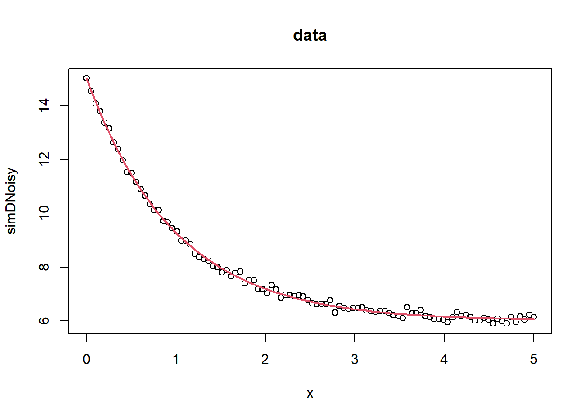

I was discussing with Johannes on how to calculate confidence intervals for a growth model, or more in general, confidence interval, credibal interval, prediction interval, tolerance interval. I need to write that up too. I have written him a formula for deriving the SEs from the Hessian matrix of the optim output or using the numDeriv::hessian function. However, our beloved myGenAssist does not agree with me. After a clarification with the assistant, we reached an agreement.
If you are maximizing the log(likelihood), then the negative of the hessian is the “observed information” (Fisher information matrix). If you minimize a “deviance” = (-2)*log(likelihood), then half of the hessian is the observed information. The sigma is then the square root of the diagnal element of the fisher information matrix. In the unlikely event that you are maximizing the likelihood itself, you need to divide the negative of the hessian by the likelihood to get the observed information.
The second derivative of the log-likelihood evaluated at the maximum likelihood estimates (MLE) is the observed Fisher information. Most optimization algorithms in R like optim return this Hesiian. If the negative log-likelihood
Relationship between ML and Least squares
Least square is an estimate \(\hat{\mu}^\text{LS}\) the value of \(\mu\) that minimizes \(\sum (y_i-\mu)^2\). MLE is an estimate \(\hat{\mu}^\text{MLE}\) that maximizes the likelihood function \(L(\mu) = \prod f(y_i|\mu)\), or \(\sum_i \log(f(y_i;\mu))\).
# library(minpack.lm)###### example 1## values over which to simulate data x <-seq(0,5,length=100)## model based on a list of parameters getPred <-function(parS, xx) parS$a *exp(xx * parS$b) + parS$c ## parameter values used to simulate datapp <-list(a=9,b=-1, c=6) ## simulated data, with noise simDNoisy <-getPred(pp,x) +rnorm(length(x),sd=.1)## plot dataplot(x,simDNoisy, main="data")## residual function residFun <-function(p, observed, xx) observed -getPred(p,xx)## starting values for parameters parStart <-list(a=3,b=-.001, c=1)## perform fit nls.out <-nls.lm(par=parStart, fn = residFun, observed = simDNoisy,xx = x, control =nls.lm.control(nprint=1))
It. 0, RSS = 1963.1, Par. = 3 -0.001 1
It. 1, RSS = 329.317, Par. = 5.24628 -0.149948 3.23136
It. 2, RSS = 105.118, Par. = 6.67669 -0.307132 4.26384
It. 3, RSS = 53.4491, Par. = 7.47434 -0.425683 4.69471
It. 4, RSS = 32.9237, Par. = 7.6463 -0.717782 6.11154
It. 5, RSS = 3.06469, Par. = 8.72982 -1.01837 6.18544
It. 6, RSS = 1.08438, Par. = 9.02954 -1.01227 5.99895
It. 7, RSS = 1.08436, Par. = 9.02955 -1.01245 5.99885
It. 8, RSS = 1.08436, Par. = 9.02955 -1.01245 5.99885
## plot model evaluated at final parameter estimates lines(x,getPred(as.list(coef(nls.out)), x), col=2, lwd=2)

## summary information on parameter estimatessummary(nls.out)
Parameters:
Estimate Std. Error t value Pr(>|t|)
a 9.02955 0.04569 197.61 <2e-16 ***
b -1.01245 0.01113 -90.94 <2e-16 ***
c 5.99885 0.02028 295.77 <2e-16 ***
---
Signif. codes: 0 '***' 0.001 '**' 0.01 '*' 0.05 '.' 0.1 ' ' 1
Residual standard error: 0.1057 on 97 degrees of freedom
Number of iterations to termination: 8
Reason for termination: Relative error in the sum of squares is at most `ftol'.
Anyway, I first did a search on Hessian, likelihood, Fisher information matrix and came across [this post] (https://stats.stackexchange.com/questions/381984/standard-error-from-hessian-matrix-when-likelihood-is-used-rather-than-ln-l). Below is to reproduce the results of that post.
Denote \[l(x) = \ln L(x)\] and ’ for differentiation,
The problem seems to be round-off error or objective functions being much, much smaller than the default stopping-rule thresholds as WarrenWeckesser and JimB pointed out.
x =c(1, 3, 4, 5, 7.5, 10, 12, 23, 39, 40)# The *exact* MLE for the normal distribution is# mu = mean(x), sigma = sqrt(var(x)*(length(x) - 1)/length(x)) p0 =c(mean=mean(x), sd=sd(x)) Llikelihood <-function(par, x) {return(sum(dnorm(x, mean=par["mean"], sd=abs(par["sd"]), log =TRUE))) } o1 <-optim(par=p0, fn=Llikelihood, x=x, hessian=TRUE, method="CG", control=list(fnscale=-1, reltol=1e-12, maxit=10000))cat("\n*** Using log-likelihood ***\n\n")
*** Using log-likelihood ***
cat("Estimated parameters:\n")
Estimated parameters:
o1$par
mean sd
14.45000 13.83194
cat("\nEstimated Hessian:\n")
Estimated Hessian:
o1$hessian
mean sd
mean -0.05226777 0.0000000
sd 0.00000000 -0.1045355
warnings.filterwarnings("ignore", category=RuntimeWarning, message="overflow encountered in square")# warning above occurs when RSS is calculated as Hessian step can be too large H = nd.Hessian(residual)(np.copy(result.x)) warnings.filterwarnings("default", category=RuntimeWarning) # turn warnings on again C = np.linalg.inv(2*H) # discuss further why Hessian should be multiplied by two V = np.diag(C) SE = np.sqrt(V * resvar) SE[0] = SE[0] * scale_factor # rescale standard error for M0 logging.info("Hessian matrix calculated succesfully.")